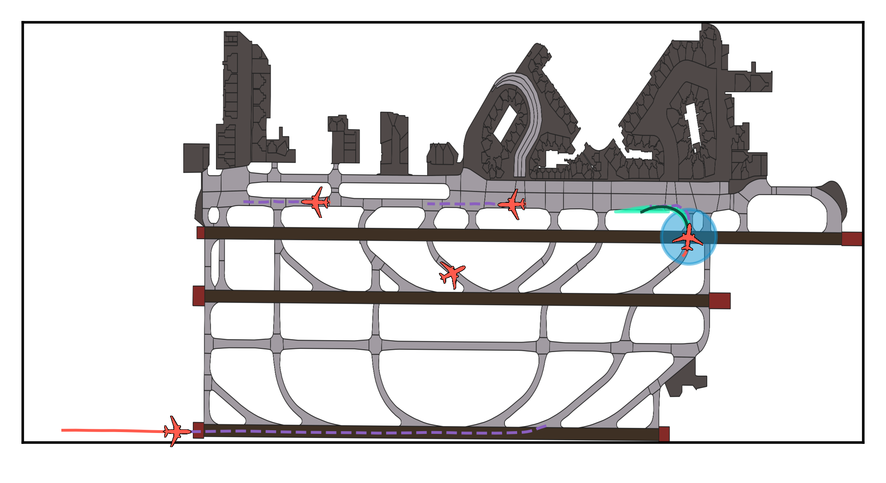
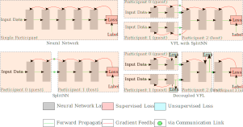
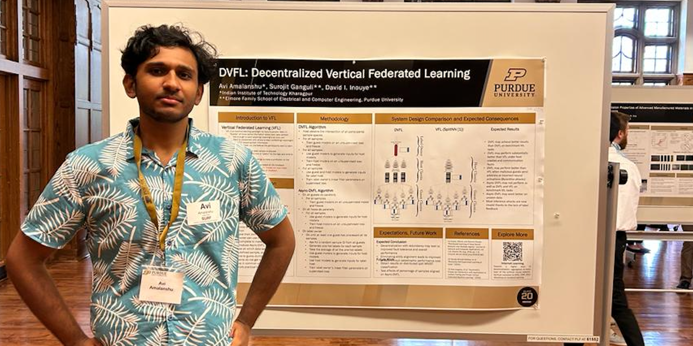

I'm an undergrad at IIT Kharagpur. I'll graduate in 2025 with
a B.Tech in ECE and M.Tech in Vision & Intelligent Systems.
I'm broadly interested in MLSys. My overarching goal is to develop AI algorithms and systems which are democratic & useable.
This is me.
I'm currently working on Neuro-Symbolic systems at AirLab,
CMU. Last year I worked on greedy and fault-tolerant distributed deep learning
as a SURF 2023 at Purdue University under
Prof. David Inouye. My work has been supported by Boeing, the IITKGP
Foundation (GKF) and NSF (REU). At IIT, I had a pretty cool bachelor's thesis on fault-tolerant vertical
federated learning. I lead the AGV research group on robotic perception (esp. multi-agent stuff). I have also
dabbled in information theory.
In my free time, I code goofy mini-projects, most of which never make it to my GitHub out of embarassment. I enjoy
playing and watching sports (especially basketball). I also spread vitriol online through my blog. I've represented
IITKGP twice in word games at the collegiate level. Recently, I've taken a liking to competitive programming and CTFs.
I did say I liked computers.
I grew up in the wonderful Hauz Khas, New Delhi, India. During breaks, you'll find me there hanging out with
old friends, my parents and the dog. I was born in Baltimore and spent some early years in Santa Clara. I guess
that makes me an expat/international student from India's perspective.
If you scroll down, you'll find abstracts for some key projects of mine.
I should mention that here a "key" project is one that is:
Recent, i.e. within the past year
Mid-to-long term, i.e. at least 2 months
They are arranged in reverse chronological order.
I have a dedicated projects page. There, you will also find projects that don't meet the "key"
criteria. You will also find some other junk like course projects there.
I've been programming in C/C++ since the 9th grade and Python since my first year of undergrad. I also have a
penchant for niche technologies. Sometimes I go out of my way to find cool stuff to implement in unpopular
frameworks and languages. But since most of my significant work is related to machine learning, my GitHub is sadly
whitewashed in Python.
I guess I also kinda familiar with Prolog now, through my work on neurosymbolic systems at CMU. I also know some bash,
asm (8051, x86, hopefully some RISC stuff soon) and ostensibly even Verilog. When I get time I want to learn OCaml,
Rust and Scala.
I'm comfortable with C++'s standard libraries and actively studying some implementations of low-level libraries in C.
I also intend to study CUDA programming in the near future. I'm well-versed in the typical ML/data pipeline for Python
with PyTorch (including Geometric and Lightning), scikit, Pandas and what have you. I also use some security tools
for CTFs like radare2, pwntools and so on.
I'd also like to think I'm a good technical writer. I've got a few peer reviewed works under my belt.
Intent Prediction in Terminal Airspace (May '24 -- ongoing)

This project is still ongoing. I will update this section once we submit our paper.
My work is to advance a project that aims to forecast and analyze aircraft activity at airports. My goal is: given
a long and complex natural-language rulebook and a view of the airport, to reliably determine if any rule is about
to be broken.
Existing work on this project includes a large-scale dataset and a software repository which processes the data,
predicts trajectories, performs visualizations and simulations etc. Besides my work on rule-checking, I am also
adding a few features to the software repository: semantic grounding for data and semantic-aware trajectory refinement.
Decoupled Vertical Federated Learning (Aug '23 -- Nov '23)

Vertical Federated Learning (VFL) is an emergent distributed machine learning paradigm wherein owners of disjoint
features of a common set of entities collaborate to learn a global model without sharing data. In VFL, a host client
owns data labels for each entity and learns a final representation based on intermediate local representations from
all guest clients. Therefore, the host is a single point of failure and label feedback can be used by malicious
guest clients to infer private features. Requiring all participants to remain active and trustworthy throughout the
entire training process is generally impractical and altogether infeasible outside of controlled environments. We
propose Decoupled VFL (DVFL), a blockwise learning approach to VFL. By training each model on its own objective,
DVFL allows for decentralized aggregation and isolation between feature learning and label supervision. With these
properties, DVFL is fault-tolerant and secure. We implement DVFL to train split neural networks and show that model
performance is comparable to VFL on a variety of classification datasets.
This work is currently under peer review. Preprint below (to be revised soon). I also presented an early sketch of
the idea at the SURF Symposium at Purdue University.

This was my Bachelor's thesis. I completed a two-semester track thesis in one. I picked this problem, formulated the
solution, designed & programmed the experiments and wrote the paper. Since the thesis submission, I've been trying to
add more datasets and models and get it accepted at a conference. Thanks to Yash
for helping out with some of the legwork since I didn't have as much time during the next semester to do it all alone.
Thanks also to Profs. Inouye and Jithin R for their valuable guidance.
Distributed machine learning has grown in popularity due to data privacy, edge computing, and large model training.
A subset of this class, Vertical Federated learning (VFL), aims to provide privacy guarantees in the scenario where
each party shares the same sample space but only holds a subset of features. While VFL tackles key privacy
challenges, it often assumes perfect hardware or communication (and may perform poorly under other conditions).
This assumption hinders the broad deployment of VFL, particularly on edge devices, which may need to conserve power
and may connect or disconnect at any time. To address this gap, we define the paradigm of Internet Learning (IL),
which defines a context, of which VFL is a subset, and puts good performance under extreme dynamic condition of data
entities as the primary goal. As IL represents a fundamentally different paradigm, it will likely require novel
learning algorithms beyond end-to-end backpropagation, which requires careful synchronization across devices. In
light of this, we provide some potential approaches for the IL context and present preliminary analysis and
experimental results on a toy problem.
This was the first bit of my work as a Summer Undergraduate Research Fellow at Purdue University. I helped Prof.
Inouye design and program the experiments, and wrote the appendix and relevant sections of the paper. I also wrote
an intermediate revision of the submission from scratch. This work was accepted to an ICML 2023 workshop.
My e-mail is avi.amalanshu@kgpian.iitkgp.iitkgp.ac.co.in..com
I anticipate your hate mail.
My email and LinkedIn are probably the easiest way to
get a hold of me.
I'm always on the lookout for interesting puzzles and research problems, especially stuff that's interdisciplinary
or niche (underappreciated). Let's talk if you have something interesting and can use my contributions.
I love handing out advice and mentoring (to the extent that I often do so unsolicited). So feel free to
solicit if you're interested! Be it JEE prep, handling acads + research at IIT, and of course, breaking into fields
I'm working in.
I'm graduating in 2025 and I'm looking for opportunities. Please reach out.